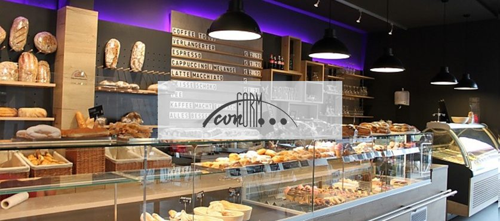
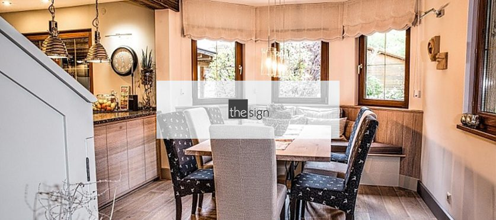
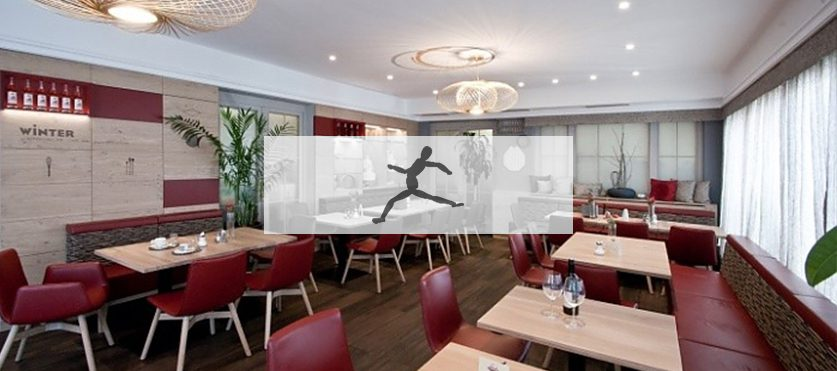
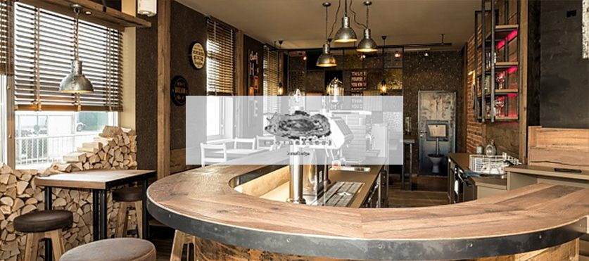
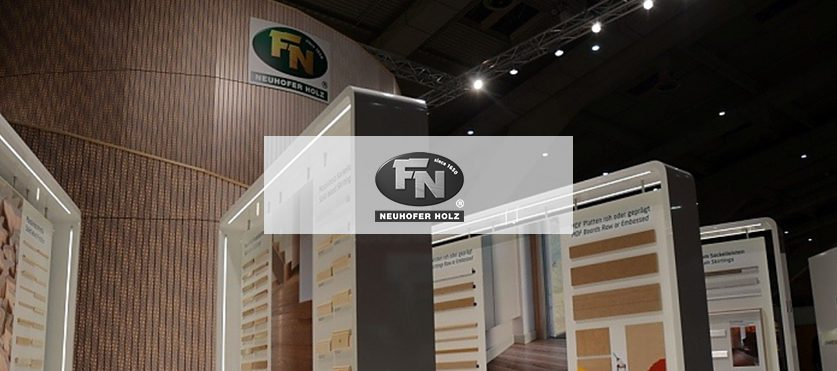

Unykat Interior Design
Interior Design und Living Rooms aus Wels – unter anderem verantwortlich für das Design des Mooserwirt am Arlberg.
Blatt 04 · Referenzen
Sie interessieren sich für vergangene Projekte oder möchten sich Inspiration für neue Ideen holen? Hier finden Sie unsere Referenzen – nach Kunden und nach Regionen geordnet.
Referenzen nach Kunden
Effizientes Kundenmanagement für jede Anforderung: Wir fertigen für Innenarchitektur- und Gastronomiekonzept-Büros ebenso wie direkt für Unternehmen und öffentliche Auftraggeber.
Interior Design und Living Rooms aus Wels – unter anderem verantwortlich für das Design des Mooserwirt am Arlberg.

Design-Partner unter anderem für die Spelunke am Wiener Donaukanal.

Ladenbau und Verkaufseinrichtungen – von der Theke bis zur Regalwand.

Innenarchitektur und Design direkt an unserem Standort in Eberstalzell.

Gemeinsam realisierte Gastronomie- und Hotelprojekte.

Gastronomiekonzepte aus der Nachbarschaft – vom Konzept bis zur fertigen Schank.

Wohnprojekte mit hohem Detailanspruch – Innenausbau nach Plan.

Restaurant- und Barausbauten mit textilen Sitzmöbeln und Massivholztischen.

RaumDesign mit Charakter – Bars, Lounges und Gasträume.

Präsentations- und Messebau für einen international tätigen Leistenhersteller.
Einrichtung im öffentlichen Bereich – ein Feld, in dem wir seit 2001 verstärkt arbeiten.
Arbeiten für eines der bekanntesten Ausstellungshäuser Österreichs.
Gemeinsame Projekte aus früheren Jahren.
Ausgewählte Objekte
Wien
Eine absolut sehenswerte Hafenkneipe nach dem Design von Living Art. Graffiti, Massivholz und Möbel aus Leder machen die Kneipe trendig und gemütlich.
Arlberg
Kult seit 1989 und bekannt aus den Après-Ski-Hits von RTL2. Hochwertiges Design von Unykat aus Wels – beim Interior jagt ein Highlight das nächste.
Salzburg · 2016
Ein Geschäftspartner beauftragte uns mit der Fertigung der öffentlichen Bereiche. Das riesige Projekt wurde qualitativ wie optisch ein voller Erfolg.
Stuttgart · 2018
Unsere hochwertigen Arbeiten aus der Hotellerie empfahlen uns für die Einrichtung einer Villa. Privatkunden profitieren direkt von diesen Erfahrungen.
Dazu kommen das Facelifting im Welser Fortino von Betreiber Christoph Parzer und die Kleinserienfertigung der Trommelmöbel für „ausgespielt“.
Referenzen nach Region
Wussten Sie bereits, dass wir in verschiedenen Regionen Österreichs sowie vielen weiteren Ländern tätig sind? Entdecken Sie viele nationale, aber auch internationale Projekte der Firma Thanner.
Rückmeldungen
Zwölf Bewertungen auf unserer Facebook-Seite, alle mit Empfehlung. Wir freuen uns über jede Rückmeldung – sie hilft uns und den nächsten Bauherren.